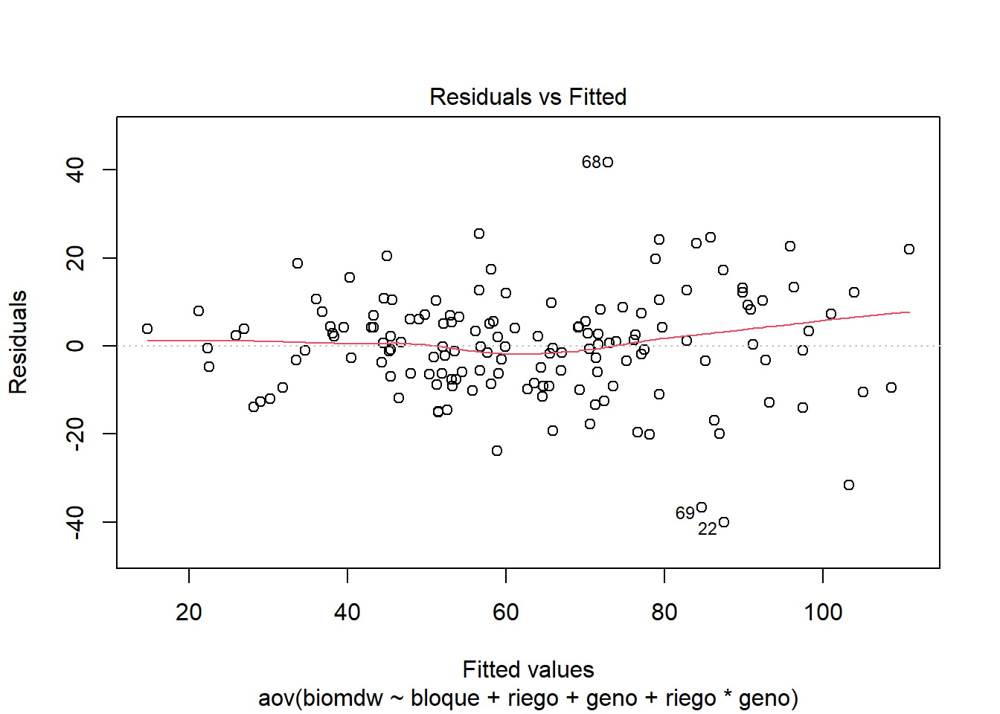
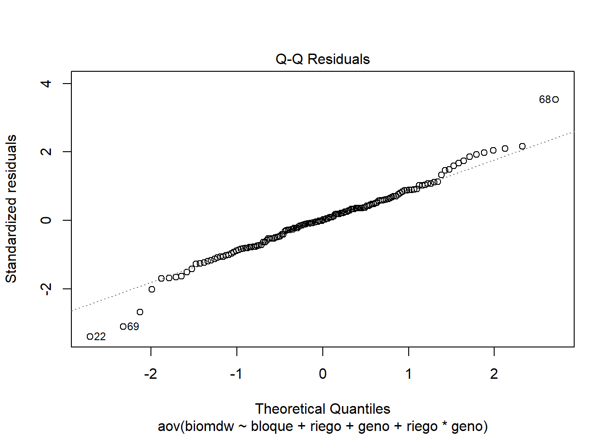
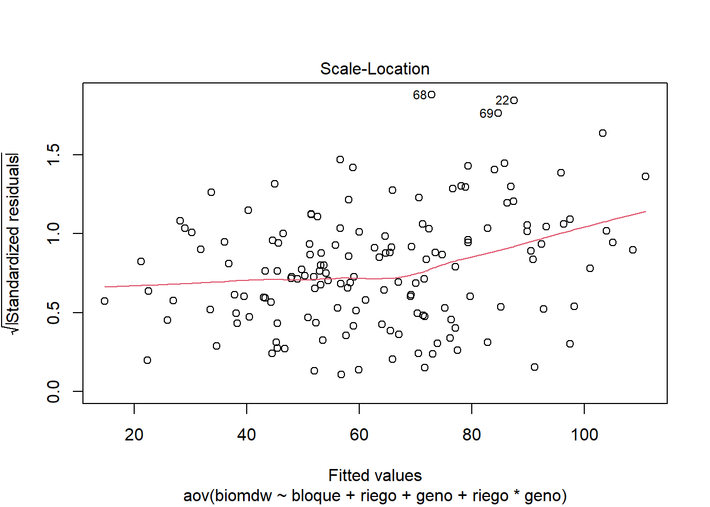
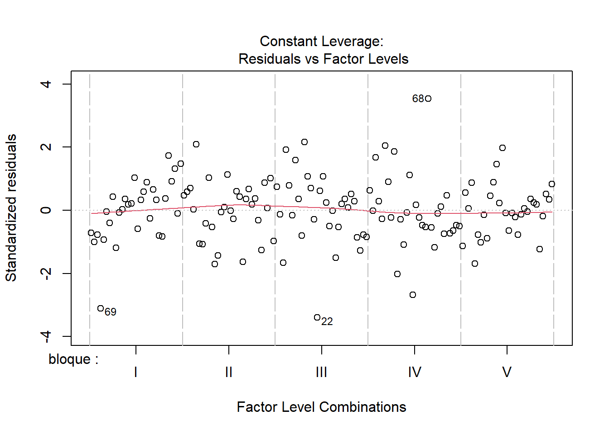
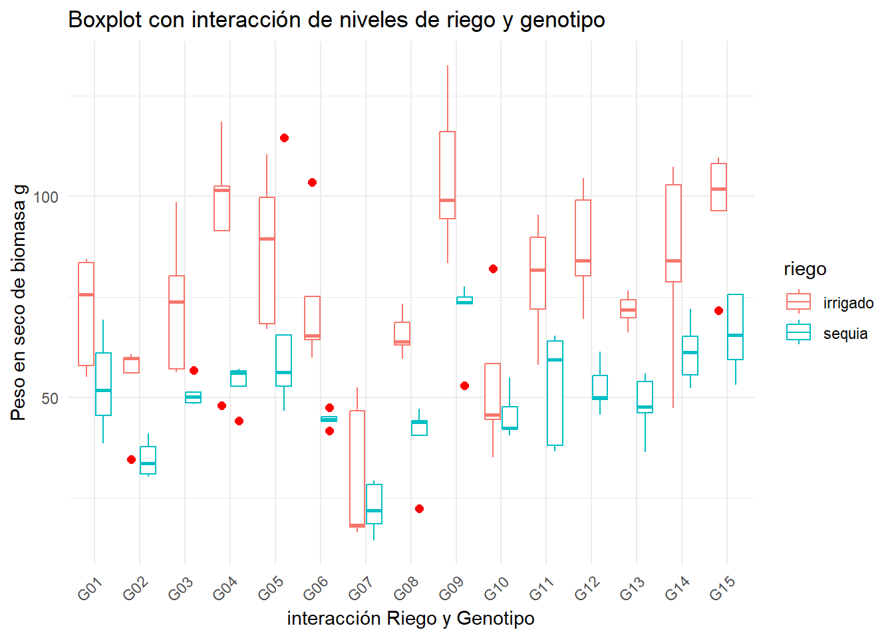
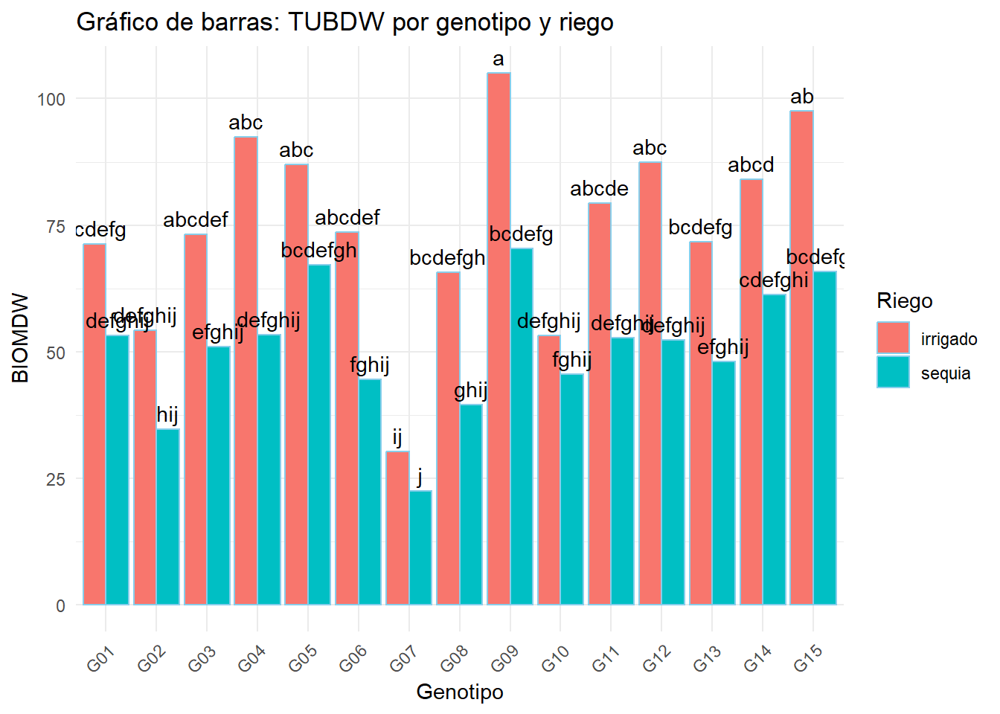
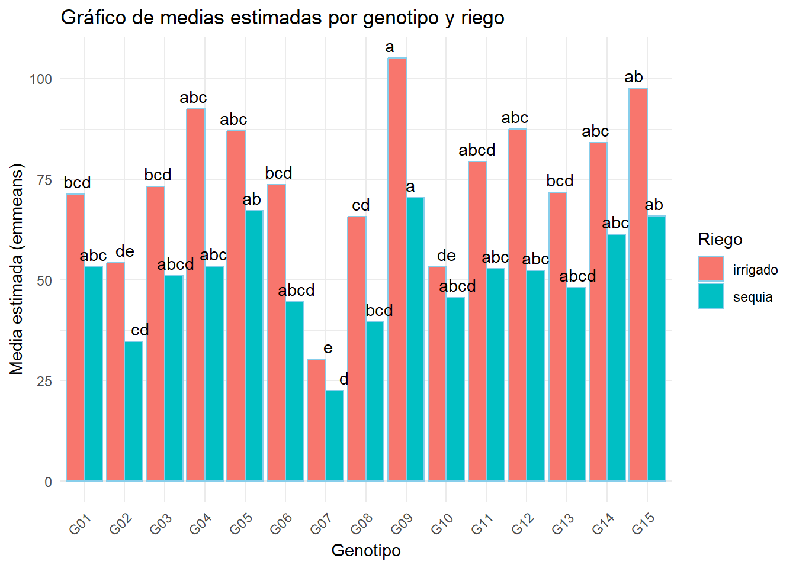
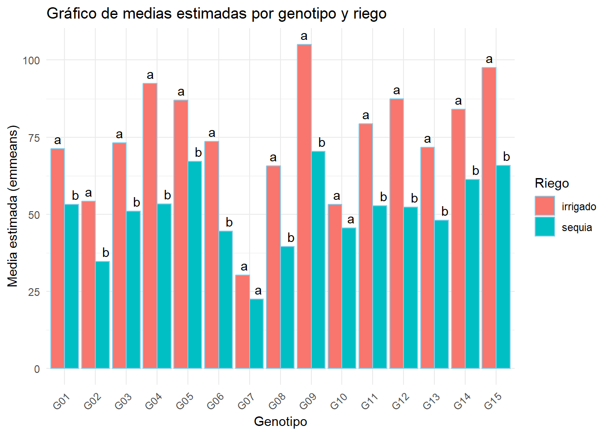

Para le eficiencia de uso de agua en relación a la biomasa, existe diferencia significativa tanto para los tratamientos y los genotipos con p = 0,002 y p < 0,001 respectivamente.
plot(modelo)




En las gráficas se puede observar que los residuos están dispersos alrededor de la línea de cero sin una tendencia clara, lo que indica que no hay una relación sistemática entre los valores ajustados y los residuos. Esto sugiere que el modelo ajusta razonablemente bien los datos. Por otro lado, los puntos numerados (como 22, 69 y 68) son valores atípicos o residuos inusualmente grandes. Estos valores son puntos de interés para revisar la calidad de los datos o evaluar si podrían estar influyendo de forma desproporcionada en el modelo.
Boxplot
ggplot(fb, aes(x = geno , y = biomdw, colour = riego)) +geom_boxplot(outlier.colour ="red",outlier.shape =16, outlier.size =2) +labs(title ="Boxplot con interacción de niveles de riego y genotipo", x ="interacción Riego y Genotipo", y ="Peso en seco de biomasa g") +theme_minimal() +theme(axis.text.x =element_text(angle =45, hjust =1))

En la gráfica se observa la respuesta de 15 genotipos de papa bajo las condiciones de riego y sequía. Bajo intervención de riego los genotipos responden mejor, siendo Ge09 el que presenta un mayor peso seco de biomasa bajo irrigación y sequía. Asimismo, se observa que hay valores atípicos que será necesario corregir para aumentar la precisión y veracidad de los datos.
Modelo lineal mixto
library(lme4)model <-lmer(formula = biomdw ~ riego + geno + riego*geno + (1| bloque), data = fb)anova(model)## Analysis of Variance Table## npar Sum Sq Mean Sq F value## riego 1 22062 22062 122.8761## geno 14 34132 2438 13.5783## riego:geno 14 2912 208 1.1586plot(model)
En las 4 graficas superiores se ve la dispersión de los residuos, incluyendo los valores atípicos y en las 4 figuras de la parte inferior las graficas sin los valores atípicos. Indicando que Los datos se distribuyen de manera más concentrada, lo que permite una mejor interpretación de la tendencia general y de la variabilidad de los datos.
grupos <- tukey_result$groups %>%rownames_to_column("tratamientos") %>%separate(tratamientos, into=c("geno","riego"), sep =":")str(grupos)## 'data.frame': 30 obs. of 4 variables:## $ geno : chr "G09" "G15" "G04" "G12" ...## $ riego : chr "irrigado" "irrigado" "irrigado" "irrigado" ...## $ biomdw: num 105.1 97.5 92.4 87.5 87.1 ...## $ groups: chr "a" "ab" "abc" "abc" ...ggplot(grupos, aes(x = geno, y = biomdw, fill = riego)) +geom_bar(stat ="identity", position ="dodge", color ="skyblue") +geom_text(aes(label = groups), position =position_dodge(width =0.9), vjust =-0.5) +# Aquí se añaden las etiquetas de 'groups' encima de las barraslabs(x ="Genotipo", y ="BIOMDW", fill=("Riego")) +theme_minimal() +theme(axis.text.x =element_text(angle =45, hjust =1)) +ggtitle("Gráfico de barras: TUBDW por genotipo y riego")

La prueba de Tukey nos permite realizar la comparación de medias, siendo su objetivo principal identificar cuáles grupos son significativamente diferentes entre sí. En la grafica si los grupos comparten letra indica que no existe diferencia significativa, en cambio sí entre grupos no comparten la misma legra entonces si existe diferencia significativa. Por lo que podemos decir que a y ab en la grafica si son significativamente iguales, pero ij y ab son significativamente diferentes. Por lo que se puede observar esta grafica no nos puede dar un panorama tan claro de la comparación de medias, por lo que será necesario realizar un grafico de barras.
emeans comparación de medias
library(emmeans)library(multcomp)models <-lmer(formula = biomdw ~ (1| bloque) + riego*geno, data = fb)anova(models)## Analysis of Variance Table## npar Sum Sq Mean Sq F value## riego 1 22062 22062 122.8761## geno 14 34132 2438 13.5783## riego:geno 14 2912 208 1.1586cm1 <-emmeans(models, ~ geno | riego) %>%cld(Letters = letters, reversed = T)cm1## riego = irrigado:## geno emmean SE df lower.CL upper.CL .group## G09 105.1 6.32 92.1 92.57 117.7 a ## G15 97.5 6.32 92.1 84.97 110.1 ab ## G04 92.4 6.32 92.1 79.88 105.0 abc ## G12 87.5 6.32 92.1 74.92 100.0 abc ## G05 87.1 6.32 92.1 74.49 99.6 abc ## G14 84.1 6.32 92.1 71.52 96.6 abc ## G11 79.4 6.32 92.1 66.84 92.0 abcd ## G06 73.7 6.32 92.1 61.09 86.2 bcd ## G03 73.2 6.32 92.1 60.60 85.7 bcd ## G13 71.8 6.32 92.1 59.19 84.3 bcd ## G01 71.3 6.32 92.1 58.76 83.9 bcd ## G08 65.7 6.32 92.1 53.09 78.2 cd ## G02 54.2 6.32 92.1 41.64 66.8 de## G10 53.2 6.32 92.1 40.65 65.8 de## G07 30.3 6.32 92.1 17.76 42.9 e## ## riego = sequia:## geno emmean SE df lower.CL upper.CL .group## G09 70.5 6.32 92.1 57.91 83.0 a ## G05 67.2 6.32 92.1 54.61 79.7 ab ## G15 65.9 6.32 92.1 53.30 78.4 ab ## G14 61.2 6.32 92.1 48.68 73.8 abc ## G04 53.4 6.32 92.1 40.83 66.0 abc ## G01 53.2 6.32 92.1 40.68 65.8 abc ## G11 52.7 6.32 92.1 40.15 65.3 abc ## G12 52.4 6.32 92.1 39.84 65.0 abc ## G03 51.0 6.32 92.1 38.47 63.6 abcd ## G13 48.0 6.32 92.1 35.46 60.6 abcd ## G10 45.6 6.32 92.1 33.00 58.1 abcd ## G06 44.6 6.32 92.1 32.03 57.2 abcd ## G08 39.6 6.32 92.1 27.05 52.2 bcd ## G02 34.8 6.32 92.1 22.19 47.3 cd ## G07 22.5 6.32 92.1 9.95 35.1 d ## ## Degrees-of-freedom method: kenward-roger ## Confidence level used: 0.95 ## P value adjustment: tukey method for comparing a family of 15 estimates ## significance level used: alpha = 0.05 ## NOTE: If two or more means share the same grouping symbol,## then we cannot show them to be different.## But we also did not show them to be the same.cm2 <-emmeans(models, ~ riego | geno) %>%cld(Letters = letters, reversed = T)cm2## geno = G01:## riego emmean SE df lower.CL upper.CL .group## irrigado 71.3 6.32 92.1 58.76 83.9 a ## sequia 53.2 6.32 92.1 40.68 65.8 b ## ## geno = G02:## riego emmean SE df lower.CL upper.CL .group## irrigado 54.2 6.32 92.1 41.64 66.8 a ## sequia 34.8 6.32 92.1 22.19 47.3 b ## ## geno = G03:## riego emmean SE df lower.CL upper.CL .group## irrigado 73.2 6.32 92.1 60.60 85.7 a ## sequia 51.0 6.32 92.1 38.47 63.6 b ## ## geno = G04:## riego emmean SE df lower.CL upper.CL .group## irrigado 92.4 6.32 92.1 79.88 105.0 a ## sequia 53.4 6.32 92.1 40.83 66.0 b ## ## geno = G05:## riego emmean SE df lower.CL upper.CL .group## irrigado 87.1 6.32 92.1 74.49 99.6 a ## sequia 67.2 6.32 92.1 54.61 79.7 b ## ## geno = G06:## riego emmean SE df lower.CL upper.CL .group## irrigado 73.7 6.32 92.1 61.09 86.2 a ## sequia 44.6 6.32 92.1 32.03 57.2 b ## ## geno = G07:## riego emmean SE df lower.CL upper.CL .group## irrigado 30.3 6.32 92.1 17.76 42.9 a ## sequia 22.5 6.32 92.1 9.95 35.1 a ## ## geno = G08:## riego emmean SE df lower.CL upper.CL .group## irrigado 65.7 6.32 92.1 53.09 78.2 a ## sequia 39.6 6.32 92.1 27.05 52.2 b ## ## geno = G09:## riego emmean SE df lower.CL upper.CL .group## irrigado 105.1 6.32 92.1 92.57 117.7 a ## sequia 70.5 6.32 92.1 57.91 83.0 b ## ## geno = G10:## riego emmean SE df lower.CL upper.CL .group## irrigado 53.2 6.32 92.1 40.65 65.8 a ## sequia 45.6 6.32 92.1 33.00 58.1 a ## ## geno = G11:## riego emmean SE df lower.CL upper.CL .group## irrigado 79.4 6.32 92.1 66.84 92.0 a ## sequia 52.7 6.32 92.1 40.15 65.3 b ## ## geno = G12:## riego emmean SE df lower.CL upper.CL .group## irrigado 87.5 6.32 92.1 74.92 100.0 a ## sequia 52.4 6.32 92.1 39.84 65.0 b ## ## geno = G13:## riego emmean SE df lower.CL upper.CL .group## irrigado 71.8 6.32 92.1 59.19 84.3 a ## sequia 48.0 6.32 92.1 35.46 60.6 b ## ## geno = G14:## riego emmean SE df lower.CL upper.CL .group## irrigado 84.1 6.32 92.1 71.52 96.6 a ## sequia 61.2 6.32 92.1 48.68 73.8 b ## ## geno = G15:## riego emmean SE df lower.CL upper.CL .group## irrigado 97.5 6.32 92.1 84.97 110.1 a ## sequia 65.9 6.32 92.1 53.30 78.4 b ## ## Degrees-of-freedom method: kenward-roger ## Confidence level used: 0.95 ## significance level used: alpha = 0.05 ## NOTE: If two or more means share the same grouping symbol,## then we cannot show them to be different.## But we also did not show them to be the same.cm3 <-emmeans(models, ~ riego * geno) %>%cld(Letters = letters, reversed = T)cm3## riego geno emmean SE df lower.CL upper.CL .group ## irrigado G09 105.1 6.32 92.1 92.57 117.7 a ## irrigado G15 97.5 6.32 92.1 84.97 110.1 ab ## irrigado G04 92.4 6.32 92.1 79.88 105.0 abc ## irrigado G12 87.5 6.32 92.1 74.92 100.0 abc ## irrigado G05 87.1 6.32 92.1 74.49 99.6 abc ## irrigado G14 84.1 6.32 92.1 71.52 96.6 abcd ## irrigado G11 79.4 6.32 92.1 66.84 92.0 abcde ## irrigado G06 73.7 6.32 92.1 61.09 86.2 abcdef ## irrigado G03 73.2 6.32 92.1 60.60 85.7 abcdef ## irrigado G13 71.8 6.32 92.1 59.19 84.3 bcdefg ## irrigado G01 71.3 6.32 92.1 58.76 83.9 bcdefg ## sequia G09 70.5 6.32 92.1 57.91 83.0 bcdefg ## sequia G05 67.2 6.32 92.1 54.61 79.7 bcdefgh ## sequia G15 65.9 6.32 92.1 53.30 78.4 bcdefgh ## irrigado G08 65.7 6.32 92.1 53.09 78.2 bcdefgh ## sequia G14 61.2 6.32 92.1 48.68 73.8 cdefghi ## irrigado G02 54.2 6.32 92.1 41.64 66.8 defghij## sequia G04 53.4 6.32 92.1 40.83 66.0 defghij## sequia G01 53.2 6.32 92.1 40.68 65.8 defghij## irrigado G10 53.2 6.32 92.1 40.65 65.8 defghij## sequia G11 52.7 6.32 92.1 40.15 65.3 defghij## sequia G12 52.4 6.32 92.1 39.84 65.0 defghij## sequia G03 51.0 6.32 92.1 38.47 63.6 efghij## sequia G13 48.0 6.32 92.1 35.46 60.6 efghij## sequia G10 45.6 6.32 92.1 33.00 58.1 fghij## sequia G06 44.6 6.32 92.1 32.03 57.2 fghij## sequia G08 39.6 6.32 92.1 27.05 52.2 ghij## sequia G02 34.8 6.32 92.1 22.19 47.3 hij## irrigado G07 30.3 6.32 92.1 17.76 42.9 ij## sequia G07 22.5 6.32 92.1 9.95 35.1 j## ## Degrees-of-freedom method: kenward-roger ## Confidence level used: 0.95 ## P value adjustment: tukey method for comparing a family of 30 estimates ## significance level used: alpha = 0.05 ## NOTE: If two or more means share the same grouping symbol,## then we cannot show them to be different.## But we also did not show them to be the same.
Gráfico geno | riego
cm1_df <-as.data.frame(cm1) %>%rename(sig =".group")ggplot(cm1_df, aes(x = geno, y = emmean, fill = riego)) +geom_bar(stat ="identity", position ="dodge", color ="skyblue") +geom_text(aes(label = sig, y = emmean), position =position_dodge(width =0.9), vjust =-0.5) +labs(x ="Genotipo", y ="Media estimada (emmeans)", fill ="Riego") +theme_minimal() +theme(axis.text.x =element_text(angle =45, hjust =1)) +ggtitle("Gráfico de medias estimadas por genotipo y riego")

Gráfico riego | geno
cm2_df <-as.data.frame(cm2) %>%rename(sig =".group")ggplot(cm2_df, aes(x = geno, y = emmean, fill = riego)) +geom_bar(stat ="identity", position ="dodge", color ="skyblue") +geom_text(aes(label = sig, y = emmean), position =position_dodge(width =0.9), vjust =-0.5) +labs(x ="Genotipo", y ="Media estimada (emmeans)", fill ="Riego") +theme_minimal() +theme(axis.text.x =element_text(angle =45, hjust =1)) +ggtitle("Gráfico de medias estimadas por genotipo y riego")

Gráfico geno * riego
cm3_df <-as.data.frame(cm3) %>%rename(sig =".group")ggplot(cm3_df, aes(x = geno, y = emmean, fill = riego)) +geom_bar(stat ="identity", position ="dodge", color ="skyblue") +geom_text(aes(label = sig, y = emmean), position =position_dodge(width =0.9), vjust =-0.5) +labs(x ="Genotipo", y ="Media estimada (emmeans)", fill ="Riego") +theme_minimal() +theme(axis.text.x =element_text(angle =45, hjust =1)) +ggtitle("Gráfico de medias estimadas por genotipo y riego")
La grafica nos muestra el peso seco de la biomasa (g) por genotipo y riego. Indicando que el genotipo (G09) ha tenido una mayor respuesta bajo condiciones de irrigación y que a su ves su media es significativamente igual genotipo (G15) en las mismas condiciones. También se puede observar que bajo condiciones de sequia los genotipos que han tenido una mayor respuesta en relación al peso seco de la biomasa son G05, G09 y G15 que a su vez son significadamente iguales.